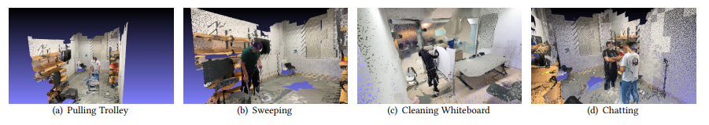
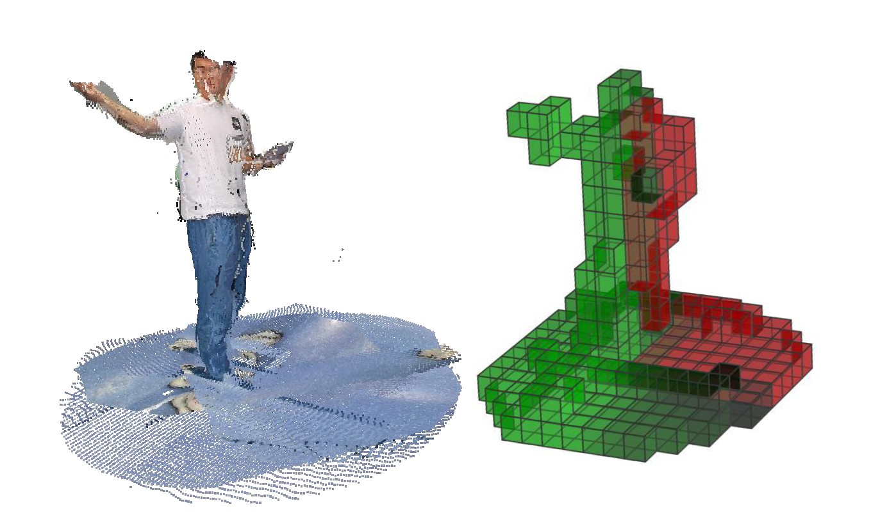

Overview of Volumetric Video Watching User Behavior Dataset

Figure 1: Sample volumetric video frames used in user behavior data collection
Our dataset is the first to fully depict users' behavior pattern in volumetric video wathcing.
- It contains 50 sequences of user behavior data.
- The data sequences are collected using a self-designed software based on Unity running on a Meta Quest Pro headset.
- The dataset has a rich diversity of users' interactions with 6 different scenes.
Our dataset can support many research tasks in viewport prediction, volumetric video streaming and other areas, for example:
- User Identification for Volumetric Videos
- Personalized Content Delivery
- Healthcare Services
- Education & Training
Publications
The following paper describes in detail how the dataset is collected and gives a in-depth analysis on user behavior pattern. Additionally, the paper proposes an viewport prediction models as an application case. Please kindly remind that the usage of this dataset should be based on a proper cite of this paper.
|  | Kaiyuan Hu, Haowen Yang, Yili Jin, Junhua Liu, Yongting Chen, Miao Zhang, Fangxin Wang. 2023. Understanding User Behavior in Volumetric Video Watching: Dataset, Analysis and Prediction. In Proceedings of the 31st ACM International Conference on Multimedia (MM ’23), October 29- November 3, 2023, Ottawa, ON, Canada. ACM, New York, NY, USA, 9 pages. https://doi.org/10.1145/3581783.3613810 |
Description of Selected Volumetric Videos
Here is a index of content of the dataset
Table 2: Index of Content